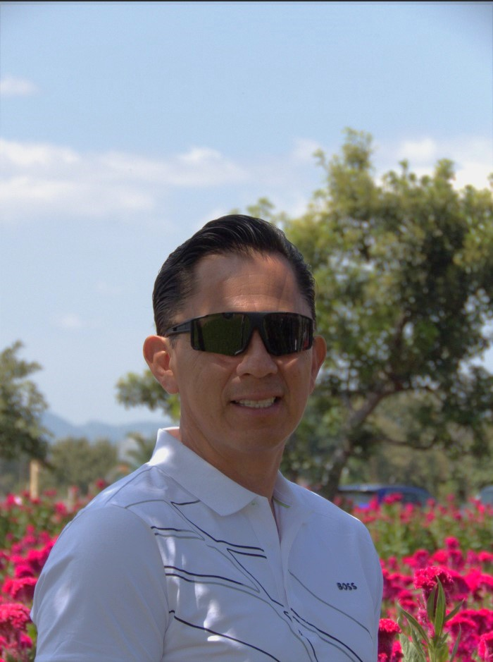

Enoc Reyes | WDD 130
Hello! My name is Enoc Reyes, I am living in Oaxaca Mexico, I enjoy to play tenis and spend time with my family to have fun. Currently I study programming in BYU-I. I’ve enjoyed reading about different types of engineering and how they’re applied to different types of problems. I think it’s essential to have a wide range of knowledge when working in an engineering field to be prepared for anything. I’m looking forward to meeting many new people while study.The last few years I have been working in interior design and hosting tours in the city where I live, I have met people from different countries and I have had the opportunity to practice my English a little. I have a beautiful family that I love and that loves me, we are very close and we try to help each other as much as possible. In the next few years I would like to travel to the European continent to visit at least 2 of the most important cities.